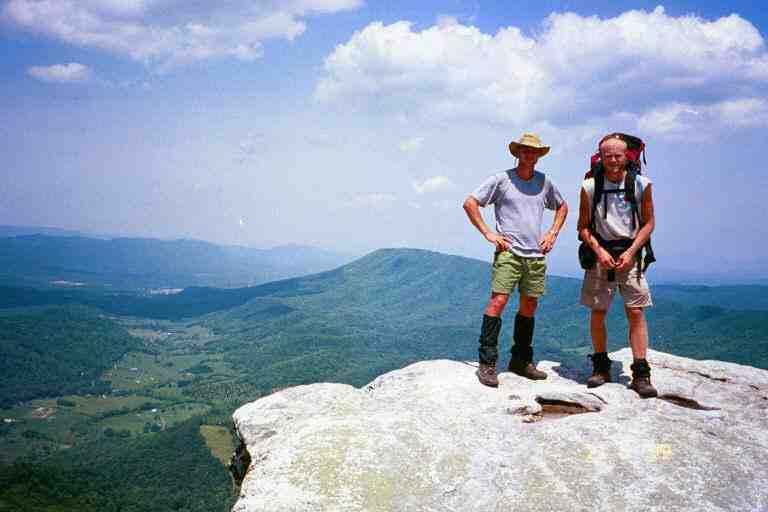

A hiker must average 15 miles per day to do the entire 2160 miles of the AT in 5 months and must average 12 miles per day to accomplish it in 6 months. In our original planning we figured we would be starting slowly and could build into 20 mile days and maybe finish in a little over 5 months. We were continually checking our mileage and we were now thinking that 6 months would be more realistic.
We had hiked the 160 miles to the Smokies in 20 days for an average of 8 miles and we reached Catawba on May 20, our 68th day and 680th mile, for an average of 10 miles a day. We were hiking faster and doing bigger miles now that we were in better shape, as evidenced by the past four days: 16.2, 14.0, 12.3 and then 16.7 through the Dragon Tooth area. We were walking at a pace of about 2.5 miles per hour, or about 2 mph including our short breaks, compared to 1.5 during the early stages. Also, our breaks were spaced further apart than before.
Our average was affected by some short days into towns and by 0 mile days. These were necessary, however, not only to re-supply but to replenish our energy reserves and to get some rest. The constant climbing was draining and we were often tired. It seems that I could never get enough rest and was always hungry. It was not rare to come upon a hiker sleeping in a shelter in the middle of the day or relaxing under a tree.
We figured that we would be doing even better in the mid Atlantic states where the elevations were not as high. Of course we did not take into consideration the record breaking heat and the water shortage in the upcoming summer.
We did 15.6 miles on May 21. It was a wonderful exciting day with a variety of terrain and adventures and lots of wonderful people. Most of the morning was in undulating pastureland, climbing stiles, going in and out of little woods at the edge of fields and long treks in hot open fields. When we arrived at the top of a hill in the middle of field, we would stop for a few minutes and take in the beautiful scenery in the distance. There were farm houses nestled at the bottom of valleys, country roads meandering in and out of valleys, fields of long grass, fields with grazing cattle and the whole scene framed with high forest covered mountains. We had gone through similar territory over the last few weeks and would see more of it throughout beautiful Virginia.
We recall entering a large pasture with a steep rising slope. We aimed for white blazes attached to wooden stakes far off in the distance, where we caught glimpses of INDIANA. When we reached the top, it was simply a little plateau and the field continued rising ahead and to our right. It was hard to find blazes, but there seemed to be an opening in the woods part way to the right at the top of a hill that was steeper and higher than the rest of the field. We thought we had seen INDIANA go that way. However we were a little apprehensive as there were cattle up in that area, just hanging around the edge of the woods.
It was a long walk to get there and we became cautious as we approached, avoiding looking directly in the eyes of the cattle. We found the spot where there was a narrow path leading up into the woods and were surprised to find that there were cattle all over the woods munching on leaves and vegetation. They all looked up and mooed at us as we went by. There were a number of cows with their calves. One calf was standing right on the path, and there was no room for us to go by nor any place for him to move off the path. As we moved forward, he walked away from us trying to find a way off the path. He called out and one of the cows seemed to be answering. I hope she would not think we wanted to harm her baby. Finally he found a break in the trees and got off the trail. We hurried on.
After crossing VA 311, we climbed Catawba Mountain passing by the old dilapidated Boy Scout shelter and Catawba Mountain shelter. We then climbed up more than 1000 feet in 1.5 miles to McAfee Knob where we were awed by the view. It is a sandstone outcrop that juts out over a valley far below. The softer rock below it had eroded hundreds of years ago leaving these rocks suspended in the air from the edge of the cliffs. The trail continues along the top of the knob for a short distance. Many hikers (not us) sit on the edge with their feet dangling over as in the attached picture of SINGLEMALT that I found at his site. We took the attached picture of FUNK THAT (left) and SPUDS.at this spot.

The trail dropped a little below the ridge line behind McAfee Knob into a wooded area littered with giant slabs of rocks at least 15 feet in height, through which the trail wound. We came to Campbell shelter where we relaxed on the porch in the shade of tall straight trees which grew here and there in the clearing around the shelter. The trail returned to the ridge line and continued contouring the valley, finally coming to Tinker Cliffs.
The Cliffs are much like McAfee Knob but continue on for a longer distance and the rocks did not jut out as far. The trail remained mostly in the trees next to the cliffs, venturing close to the edge once in a while. We met a group here that included a mother with teenage kids, taking pictures of each other laying and sitting on the outcroppings over the valley. They were part of THE FAMILY and friends that we had seen the previous night at The Homeplace. We continued on to Lamberts Meadow shelter where we met more of their group. They asked if we were MA and PA and told us that SINGLETRACK was about 0.3 miles ahead at Lamberts Meadow Campsite. We hung around here and met the rest of THE FAMILY and some friends. SPUD arrived and was excited when I told him that they were from Missouri like he was.
****************
We had heard a lot about the Family before we started our trip and had seen a picture of them in a slide presentation before we left home. They were Anne Allen (APPY ANNE) and her 5 children aged 11 to 22 who did the entire trail the previous year. The children were SPORT, ROSEY, THE ARTIST, 4 X 4, and SUCHES '75. They were able to do the trail because they are home schooled.
They had been one of the featured attractions at Trail Days in Damascus, where they gave a slide presentation of their adventure. They were now touring around visiting some of the trail places and meeting with friends from last year. This evening they would be staying at the shelter and were expecting a visit from a trail angel from last year who lived nearby and would be bringing up hot dogs to cook for supper.
APPY ANNE told us a little about their adventure. Like us, they had to walk at the speed of the slowest, but this was more complicated with 6 people. If one of them got injured or sick, and it happened, it affected all of them. There was the logistics of the pack weights of the various members, the sharing of equipment, the cooking and other chores. All their feet widened and lengthened including hers and those of her 22 year old daughter who went up two shoe sizes. Young SPORT's shoe size went to 14. They went through 32 pairs of shoes and boots on their trip.
They took 7 months to get to Katahdin where her husband came to meet them. He drove them for the next few weeks so they could hike the 200 miles of trail that they had skipped for various reasons. It was a thrill to meet this mother and her wonderful children. What a brave and dynamic lady she was.
***********************
We hiked the short distance to the campsite and spent the night with a large crowd at a beautiful spot situated in a ravine next to a stream. Some of the people here were FENRIR, WOODPACKER, FUNK THAT, SPUD, SINGLETRACK and MINNESOTA MIKE. While we were eating supper, a deer came close to camp to check us out. It was still hanging around when we went up a side trail to find a toilet spot. The trail angel with the hot dogs for THE FAMILY, came through with his wife and two little children. The children were under 6 and very precocious and very used to walking in the woods. They came back much later and seemed unconcerned about the fading light as they headed home through the woods with flashlights.
The next morning we hiked the 9.1 miles to US 220 in less than 5 hours. As we walked along the ridge, we went under a number of high tension power lines. We had seen these a few times in the last weeks. We could hear them humming a long way off and we got nervous as we approached the mountain top clearings that they went through. We could almost feel our hair stand on end as we hurried under the noisy humming lines. A look in both directions would reveal the wide clearing, and the power lines and towers, cutting a path through the forest down both sides of the mountain, across the valleys and up the sides of the next mountains.
The last half mile of trail rose from Tinker Creek to the highway along a corridor of flowering trees on a wide mowed grass path. There was a package addressed to Owen Okie where the path emerged onto the side of the highway. FENRIR had obviously managed to get to the post office in Troutville (another mile and a half up the trail and then a mile down a road). He had come back and left his package here, while he went down the highway to see about restaurants and accommodations.
At this point on US 220 there are a few restaurants, two motels and a gas station convenience store. There are no homes and there are no sidewalks and the traffic was dangerous. We met FARLEY at the convenience store and she told us that the Best Western next door was $50, including a large breakfast, regardless of the number of people in the room. She said they had 8 people in their room and they had all gone to breakfast. I checked that hotel and the Econolodge across the street and decided to stay at the Best Western, although we did not want 8 people in our room. However, we had made a prior arrangement to share a room this night with WOODPACKER and FENRIR, at one quarter of the cost each.
The room was not available until around 1 p.m. so the four of us went to Pizza Hut across the street to pig out. We lined our packs along the outside wall where we could keep an eye on them from the inside. We met APPY ANNE of the family who was getting take-out food for her clan. It seems they had used the quick way out of the woods that the trail angel had used the night before. We had a great conversation at lunch. Another sign that age is not really important in the relationships between thru hikers.
After lunch we claimed our room on the second floor of one of the three large two storey units up the road behind the office. WOODPACKER showered first and plugged up the drain. It could be that it was blocked when he went in, but all I know is that there was a layer of thick scum more than half way up the tub and the filthy water was draining very slowly. Hikers sure can get dirty. While waiting for the maintenance staff, the rest of us used the shower in SINGLETRACK's room next door. In order to help SINGLETRACK with the cost of his room, we made an agreement to have WOODPACKER stay in his room for the same cost.
We got some beer and we all sat outside and socialised on the balcony with a number of other people, including, SPUD, FUNK THAT, GILL and EARLY RISER (and her dog). The latter two had a room but SPUD and FUNK THAT did not. We could have shared our two rooms with them but they seemed interested in sleeping on the floor for free. Since the rest of us were paying for our share of the rooms, the subject was dropped.
It was a great time listening to all kinds of stories including SINGLETRACK's exaggerated tales of his career as a salesman selling insurance, prepaid funerals and home siding. FUNK THAT sorted through his mail drop and gave away some of his extras. He was a vegetarian and had lots of things that he had dehydrated at home. We took some soup and some humus powder.
I spent some time swimming in the motel pool and then we walked along the edge of the highway under Interstate 81 to a supermarket. We had supper at a southern chain called Country Kitchen and had an AYCE salad bar and desserts. We were stopped in the parking lot by a man who had thru hiked in 1991. Somehow he had recognised us as hikers. There must be some kind of hungry look in our eyes.
The next morning we had the continental breakfast at the motel office. It was fantastic with a large assortment of pastries, cereals, beverages and fruit. A real treat for hikers. We found that SPUD had slept in the laundry room and that FUNK THAT had set up his tent on the lawn behind the motel.
This 11.2 mile day started mid morning with a hike through fields, across a couple of highways and over a few stiles. The grass was mowed in some of the meadows, and we went by rose bushes in some areas. The rhododendrons were all in bloom with their beautiful puffy pink flowers.
We left the civilised lower area and climbed up to Fullhardt Knob shelter where we stopped for lunch. We proceeded along a ridgeline and down to Wilson Creek shelter where we spent the night with FENRIR, SMOKEY JOE and a hiker named AXEL who was starting his thru hike today. We could tell he was new because all his equipment seemed new and clean. I had not seen a clean stove in months. This was the only time we would see him.
SMOKEY JOE pointed to me and told AXEL to beware of me because my humour could involve insults. I had not realized that he knew me that well. SMOKEY JOE was a pleasure to be around. I watched FENRIR prepare his supper. I do not recall what it was, but he made it from scratch and it looked and smelled good. He also made a dessert. He made it all look so easy that I wondered why we were eating Lipton's most meals. I guess I mentioned before that his mother owned a bakery in France.
Within an hour of leaving the next morning, we came to the Blue Ridge Parkway for the first time. For those who are not aware of it, the tourist literature says the following: "The Blue Ridge Parkway extends 469 miles along the crests of the Southern Appalachians and links two eastern national parks -- Shenandoah and Great Smoky Mountain."
On this day the trail would stay close to the Parkway for the next 6 miles, crossing it 6 times. The trail and the Parkway would then go their separate ways only to come close again for part of the next two days and then to separate and come together a few days later. At this stage, the road was a novelty but it would soon wear off. Fortunately there was very little traffic this time of year. Most times the trail crossed the road near an overlook with a parking area, and we would be able to sit on the curb or on the grass and have our break, and dump our trash in garbage cans.
A lot of the time the Parkway was on top of the ridge and the trail was parallel to and just below the ridge line and out of earshot of the traffic. We came to Bobblets Gap shelter which was a further 0.2 miles down below the ridgeline from the trail, and went to get water and have lunch. We had lunch with FENRIR and found cans of pop in a 4 foot square cement pool in which a spring emptied before flowing down the mountain side. At the time we did not see the contradiction in us filtering water from this pool for drinking, and yet taking no precautions when drinking from the pop cans which had been submerged in the same pool.
This trail magic had been placed here by QUIK and NOTIME who were travelling around with FANNY PACK, the trail angel who had been leaving treats since Georgia. WOODPACKER stayed here the night before and claimed to have had 8 cans of pop. I chastized him for his selfishness when we met later that day.
On the way back up from the shelter, we met SMOKEY JOE who was coming down. We told him we were going to try for Bryant Ridge shelter, which would make a 19.6 mile day. He said that he usually did not like to do more than 15 miles a day. He is a tall man who could have walked very fast but instead he had a slow relaxed pace, which I guess summed up everything about him.
After leaving the Parkway, the trail had many small ups and downs before finally descending in the late afternoon to Jennings Creek and VA 614 at the 16.2 mile mark. This is a popular swimming area but we did not stop because we still had 3.5 miles to do, including a steep climb and descent over Fork mountain. On the other side of the mountain we walked in dark woods along the side of a gentle slope near the bottom of a ravine. The trail eventually came to a stream which lead us to the shelter.
Bryant Ridge shelter is a beautiful new shelter situated just above a stream at the bottom of a ravine. The high trees in the ravine and on the surrounding hillsides keep the sun out, resulting in very little vegetation on the ground. The shelter is very large with a partially enclosed first floor, which was actually in two sections, one being a step above the other. There was a ladder leading to a sleeping area on the second floor.. The attached picture was taken the next morning before leaving (HONEY DO and CHICKPEE on steps with PA and WOODPACKER behind). I am also including this picture of the shelter..
QUIK and NOTIME, and CHICKPEE and HONEYDO had set up their tents on the second floor of the shelter to avoid being bitten by bugs. MA and I had not been bothered so far by bugs, but hikers were having problems with no-see-yums. HONEYDO showed us her mid section covered in welts. It should be noted that tents in shelters are generally frowned upon unless there is very few people and it does not take someone's spot. The tenters have to be ready to move their tent if there are late arrivals who need the space.
Also here were WOODPACKER and a hiker named LH51 (his initials and age). As I was making supper, we spotted someone coming down the hill at the end of the ravine. He was carrying something that looked familiar. His name was Mark and he brought us a 5 quart plastic container of ice cream. We all grabbed our spoons and dug in. It was really great, especially after our long hike. Mark is a trail angel who makes the trip to this shelter a few times a week.
The next day was mostly all climbing. We began at the 1400 foot level and climbed for 4.5 miles up Floyd Mountain at 3500 feet. After a few dips and climbs, we began to climb Apple Orchard Mountain which at over 4200 feet is the highest mountain we would see until New Hampshire. A lot of the climbing was in steep mountain meadows where the trail winds its way back and forth through the tall grass contouring bushes and rocks. We were out in the open and exposed to the hot sun. It was beautiful walking among the spring flowers at this level, listening to the songbirds, but it was tiring.
We walked for some distance here with QUIK and NOTIME. I learned that they worked in a home for children with problems. They found it very gratifying work but very taxing. QUIK was hoping to find something a little different when they got back to their regular life but still in the same field. An email from them a few months ago, reveals that they are working again with children. QUIK abandoned the trail but obtained a vehicle and followed his wife the rest of the way, climbing Katahdin with her at the end of September. NOTIME was with us the day we left the trail.
There was once a military base on top of Apple Orchard Mountain but all that remains is a fenced in building with a communication dome or observatory of some kind that we could see from a long way off as we climbed up. The top of the mountain is now just a meadow. North of the summit, is The Guillotine, a giant boulder stuck over the trail between two rock formations. FENRIR is standing under The Guillotine in the attached picture, with MA beyond..
We crossed the Parkway and hiked in a depression just below it for 0.3 miles and came to Thunder Hill shelter. It was still early in the afternoon and we had only done 10 miles but the data book showed the next shelter 13 miles away. We were sort of in a shelter mood in that period and were unsure if we wanted to go on and find a place to camp. QUIK and NOTIME spent some time with us at the shelter before going on. They gave us an empty Powerade bottle to use, as MA's water bag had sprung a leak.
The only negative thing about staying here would be the proximity of the road but we were out of sight of the traffic and there had been no visible evidence of the trail where it crossed the road. SMOKEY JOE showed up and the three of us spent the night alone in the shelter.
The next day was mostly down hill with the exception of a climb up Highcock Knob at the 6 mile mark where we found HONEYDO and CHICKPEE still hanging around their tent. It seemed that CHICKPEE was having one of his lazy mornings. They had camped here with FENRIR, QUIK and NOTIME, who had all left some time ago. We told them we would be hitching into Glasgow at the 15.4 mile mark and then would come back and stay at Johns Hollow shelter 2 miles beyond the road. They said they had a maildrop in the other direction at Big Island and that we would likely be seeing them at the shelter tonight.
As we descended we came upon many flowering trees: rhododendrons, pink azaleas and mountain laurel. We stopped for lunch at Matts Creek shelter where I soaked my feet in the creek. It would have been a great place to bathe but it was a little chilly in this beautiful shady spot and the water was cold. We talked with a group of day hikers that included a couple from England.
We arrived at the road at 2:30 which was great for the 15.4 miles we had covered. We had also descended about 3200 feet down out of the mountains to the 700 foot level. We crossed a bridge and walked down the road a little where we caught a ride within a few minutes in a pickup truck with construction equipment in the back. We placed our bags in the back and got in with the man and his dog. The medium sized dog lay partially across his lap allowing us room to fit. The dog snarled at MA the entire journey down the mountain.
The driver was quite talkative and told us he was a contractor and was building houses. He drove us right into Glasgow which was a little out of his way and let us off in front of a little place called the Blue Ridge Motel and Restaurant, across the street from a grocery store. Our books did not mention a restaurant or a motel here, but our driver had said that he thought there was a motel. After he left, a man came out of the restaurant and asked if we wanted some water or pop and invited us inside. We went into the nearly deserted restaurant and sat at a table as he poured us each a pop. There was no charge.
To make a long story short, we were enticed by a sign for a 16 ounce steak dinner and a soft sell sales pitch from the owner, including a promise to drive us back to the trail, and we decided to spend the night. MA was tired and would appreciate the rest. He offered to let us use his phone and did not monitor me. This seemed to be an older business that had recently been re-opened. The owner and his wife seemed to want to please the hiking community. They had a trail register, as did many establishments on or near the trail. We saw a nice entry from SONGBIRD who we would not be seeing again.
Glasgow is a very small place and we decided to stay close to the motel. The motel was located behind the restaurant and consisted in a number of cabins each with 4 or 5 rooms. The room was very clean but small.
Our stay in Glasgow included: grocery shopping at the grocery store across the street and the gas station/fast food/convenience store next door, great steak dinners including strawberry pie, breakfast, watching the game show network, and of course a shower. The owner had a container of coleman fuel left by another hiker and I was able to get some much needed fuel. We were driven back to the trail early the next morning.